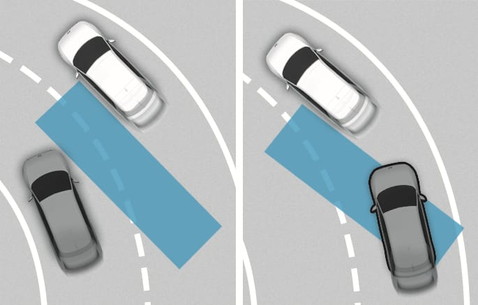
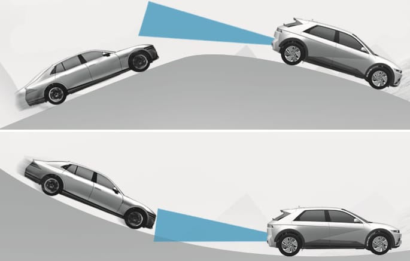
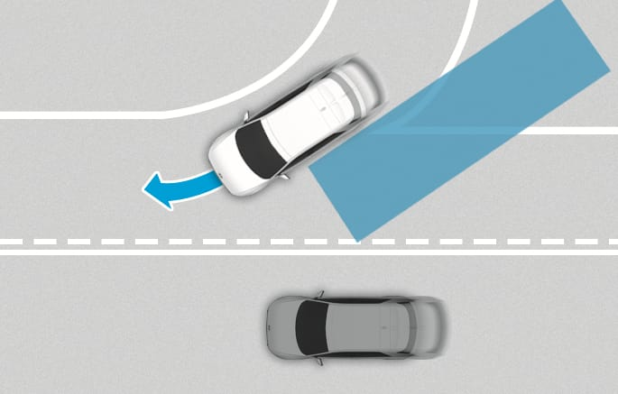
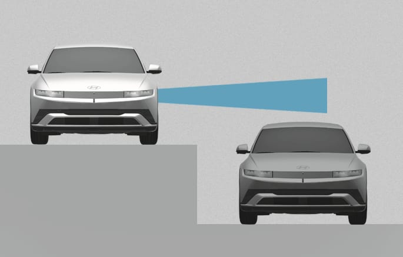

후측방 충돌방지 보조 이상 및 제한 사항
후측방 충돌방지 보조에 이상이 있거나 센서의 가림이 발생하면 계기판에 경고문이 일정시간 표시되며 통합 (
사이드 미러 경고등에 이상이 있는 경우에도 계기판에 경고문이 일정시간 표시되며 통합 (
-
경고 내용은 클러스터 유틸리티 정보 뷰의 서비스 메시지에서 확인할 수 있습니다.
-
센서 앞에 이물질이 있는 경우, 제거하면 차로 이탈방지 보조가 다시 정상적으로 작동합니다. 이물질을 제거해도 주황색
X 경고등이 계속 켜져 있으면 당사 직영 하이테크센터나 블루핸즈에서 점검을 받으십시오.
-
인식 센서 경고문이 표시되지 않거나 경고등이 켜지지 않더라도 후측방 충돌방지 보조가 정상적으로 작동하지 않을 수 있습니다.
-
시동을 건 직후에 인식 센서가 오염되었거나 차량 주변에 물체가 존재하지 않는 경우(앞이 막힘 없이 트인 장소 등) 후측방 충돌방지 보조가 정상적으로 작동하지 않을 수 있습니다.
짐칸 및 기타 장비를 사용할 때는 후측방 충돌방지 보조를 끄십시오. 후측방 충돌방지 보조를사용하려면 짐칸 및 기타 장비를 제거하십시오.
다음과 같은 경우에는 후측방 충돌방지 보조가 정상적으로 작동하지 않을 수 있습니다. 주의하여 운전하십시오.
-
고속도로 진출입 램프구간을 주행하는 경우
-
가드레일, 벽 등이 이중으로 되어있는 도로를 주행하는 경우
-
폭설 또는 폭우 같은 악천후의 경우
-
후측방 레이더 주위 범퍼 표면이 눈, 비, 흙 등에 의해 오염된 경우
-
후측방 레이더 주위 온도가 높거나 낮은 경우
-
차량 또는 기둥 및 벽 등으로 후측방 레이더 주위가 가려진 경우
-
고속도로 진출입 램프구간, 톨게이트를 주행하는 경우
-
도로 및 주변에 비정상적으로 금속 성분이 포함된 경우(지하철 공사구간 등)
-
고정된 물체(방음벽, 가드레일, 이중 가드레일, 중앙 분리대, 진입 방지봉, 가로등, 표지판, 터널벽 등)가 자차에 인접하는 경우(이중으로 되어있는 구조물 포함)
-
나무나 풀이 무성한 좁은 도로를 주행하는 경우
-
주변 차량이나 구조물이 적은 지역(사막, 초원, 교외 등)을 주행하는 경우
-
젖은 도로 위를 주행하는 경우
-
후방 차량이 매우 근접하여 주행하거나 근접 상태에서 추월하는 경우
-
상대 차량이 매우 빠른 속도로 추월하는 경우
-
상대 차량을 추월하는 경우
-
차로를 변경하는 경우
-
옆 차량과 동시에 출발하여 가속하는 경우
-
상대 차량이 옆 차로에서 옆옆 차로로 이동하거나 옆옆 차로에서 옆 차로로 이동하는 경우
-
후측방 레이더 주위에 짐칸(트레일러 혹은 캐리어)을 장착한 경우
-
후측방 레이더 주위 범퍼가 외부 물체(스티커 혹은 자전거 거치대 등)에 의해 가려진 경우
-
후측방 레이더 주위 범퍼에 충격이 가해져서 범퍼가 손상되거나 센서 위치가 틀어진 경우
-
타이어 공기압 이상, 화물칸의 과다 적재 등으로 차고가 심하게 변한 경우
-
다음과 같은 대상 물체를 인식한 경우
-
소형 이륜 원동기 또는 자전거
-
짐이 없는 트레일러 등 평평한 형태의 차량
-
버스, 대형 트럭 등 대형 차량
-
사람, 동물, 쇼핑 카트, 유모차 등 작은 크기의 이동 물체
-
스포츠카 등 차체가 낮은 차량
-
다음과 같은 경우에는 제동 제어가 작동하지 않을 수 있습니다. 주의하여 운전하십시오.
-
도로 위의 요철, 포트 홀, 이음매 등으로 인하여 차량이 심하게 흔들리는 경우
-
눈길, 고인 물, 결빙 노면 등 미끄러운 노면을 주행하는 경우
-
타이어 공기압이 낮거나 타이어가 파손된 경우
-
브레이크를 튜닝한 경우
-
급하게 조향을 하는 경우
-
커브길에서 주행하는 경우

2C_BCADrivingOnCurvedRoad
커브 길에서는 옆 차로에 있는 차량을 인식하지 못하거나, 같은 차로의 차량을 옆차로의 차량으로 인식하여 후측방 충돌방지 보조가 정상적으로 작동하지 않을 수 있습니다.
커브 길에서는 주변 차로의 도로 상황 및 주행 상태를 직접 확인하십시오.
-
경사가 있는 길에서 주행하는 경우

2C_BCAInclinedRoad
오르막길이나 내리막길에서는 옆 차로에 있는 차량을 인식하지 못해 후측방 충돌방지 보조가 정상적으로 작동하지 않을 수 있습니다.
또는 지면이나 구조물 등을 잘못 인식하여 후측방 충돌방지 보조가 잘못 작동할 수 있습니다.
오르막길이나 내리막길에서는 주변 차로의 도로 상황 및 주행 상태를 직접 확인하십시오.
-
진출입 구간에서 주행하는 경우

2C_BCAMergingRoad
진출입 구간 등의 합류 도로에서는 옆 차로의 차량을 인식하지 못해 후측방 충돌방지 보조가 정상적으로 작동하지 않을 수 있습니다.
합류 도로에서는 주변 차로의 도로 상황 및 주행 상태를 직접 확인하십시오.
-
차로 간 높이가 다른 길에서 주행하는 경우

2C_BCAHeightDifference
차로 간 높이가 다른 길에서는 차량을 인식하지 못해 후측방 충돌방지 보조가 정상적으로 작동하지 않을 수 있습니다. (지하도 합류 구간, 입체 교차로 합류 구간 등)
차로 간 높이가 다른 길에서는 주변 차로의 도로 상황 및 주행 상태를 직접 확인하십시오.
-
다른 차량이나 트레일러를 견인할 때는 후측방 충돌방지 보조를 사용하지 마십시오. 제어 안정성이 떨어질 수 있습니다.
-
강한 전자파에 의해 후측방 충돌방지 보조가 순간적으로 해제될 수 있습니다.
-
시동 또는 후측방 레이더 초기화(재부팅 등) 시 약 15초 동안 기능이 작동하지 않을 수 있습니다.